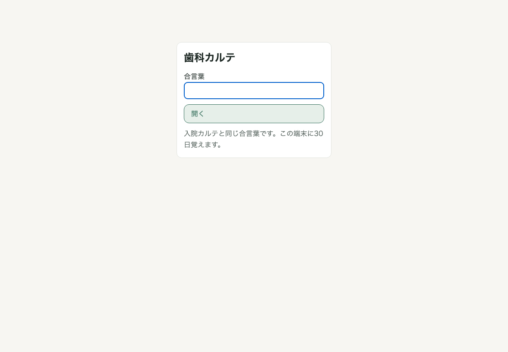
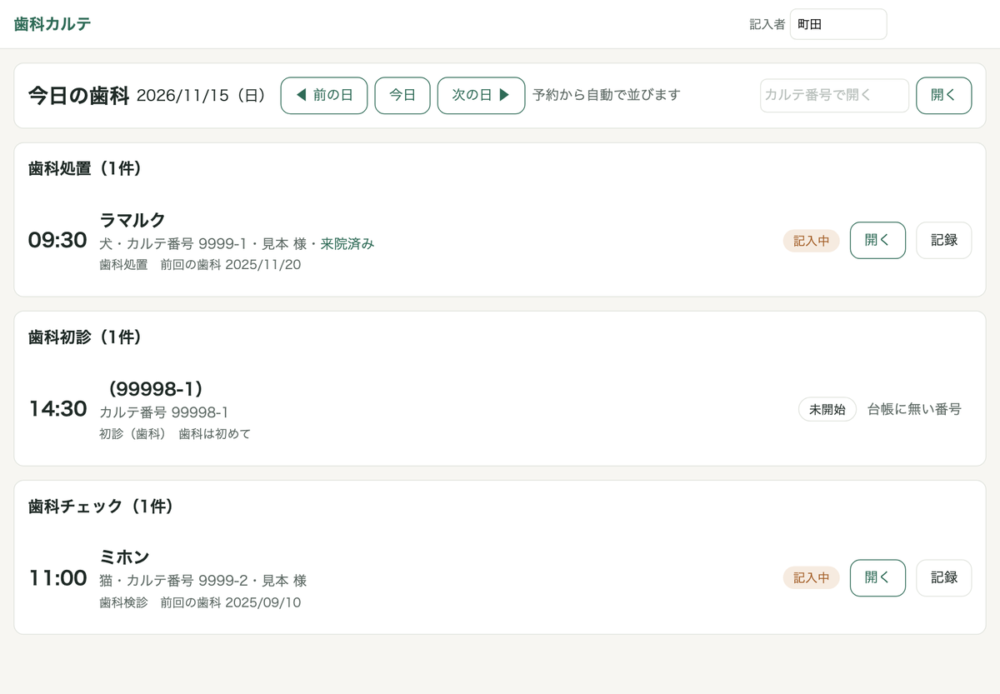
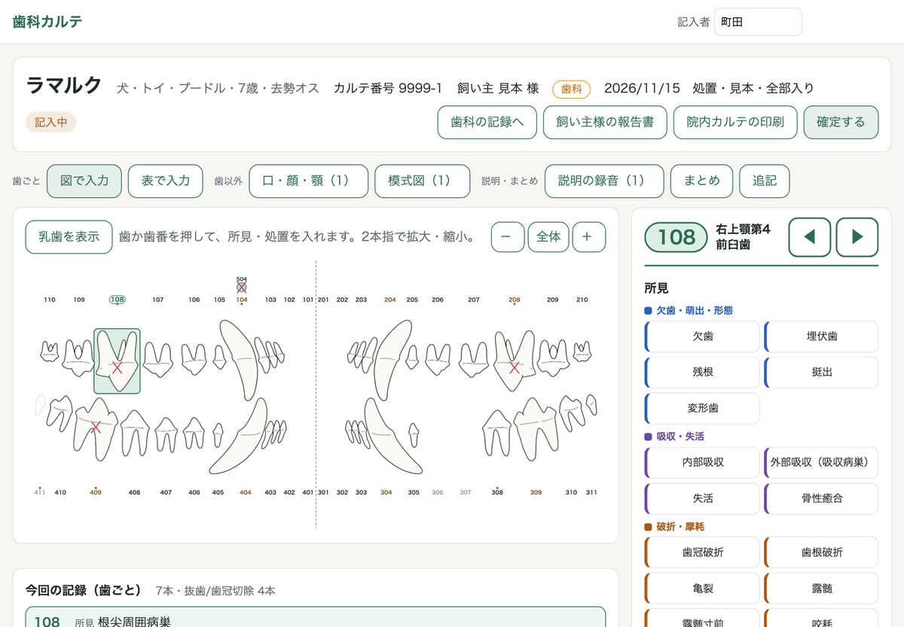
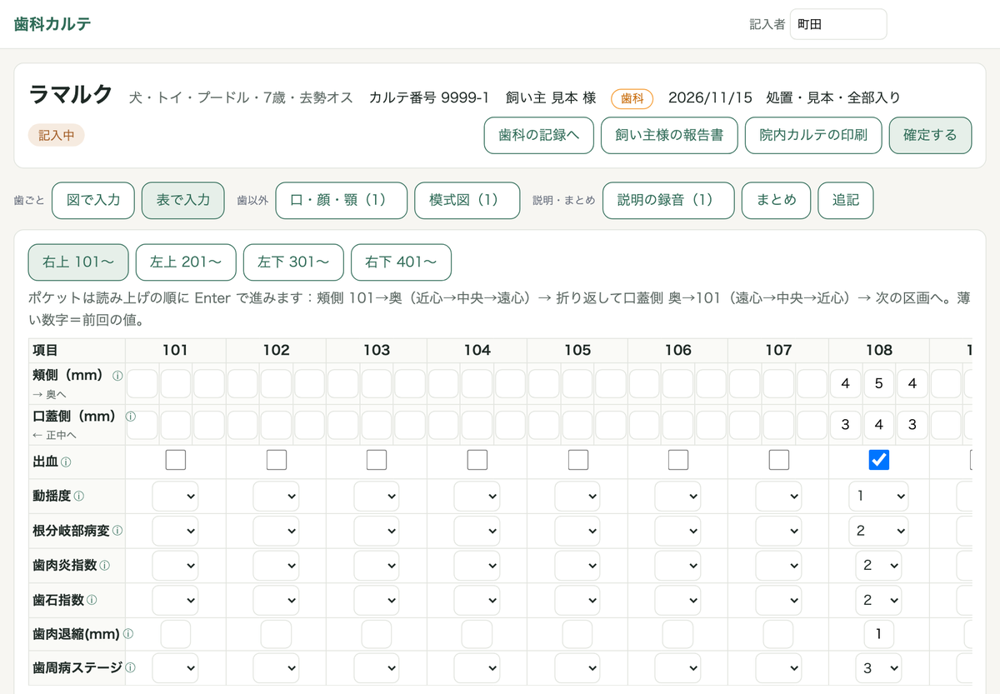
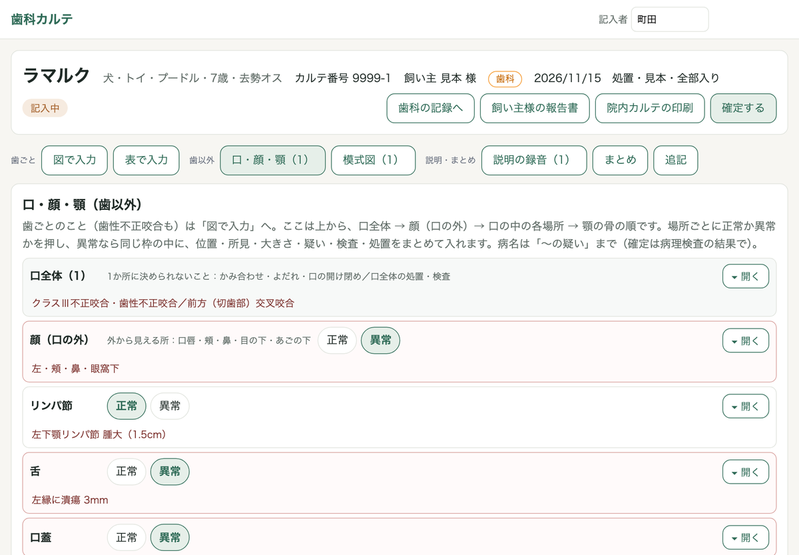
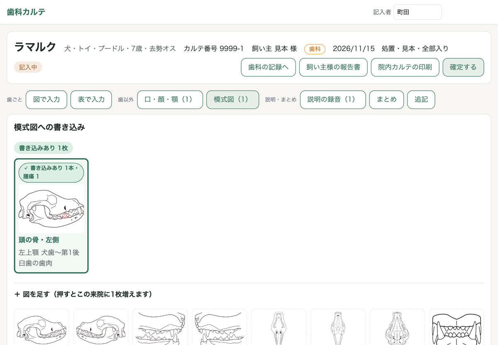
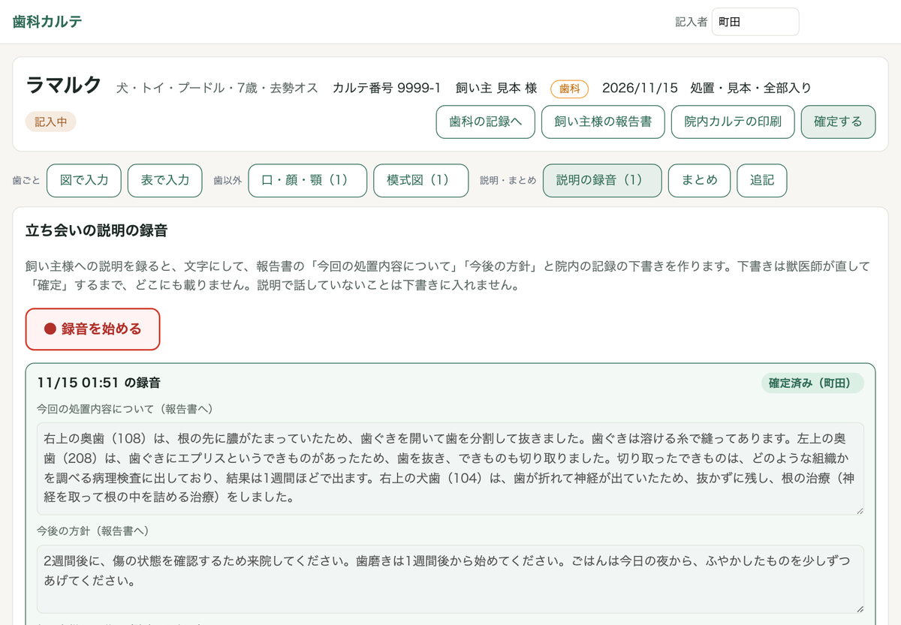
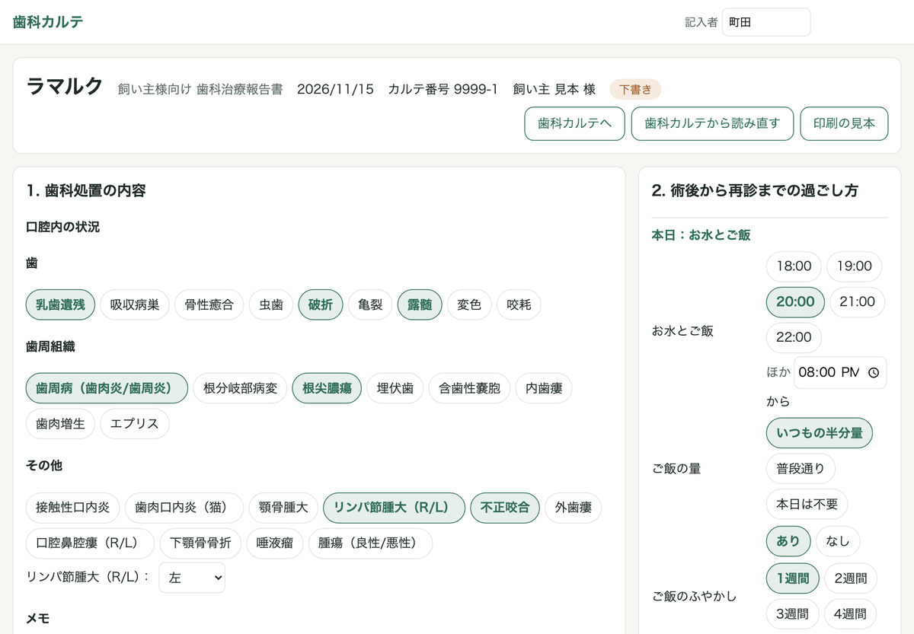
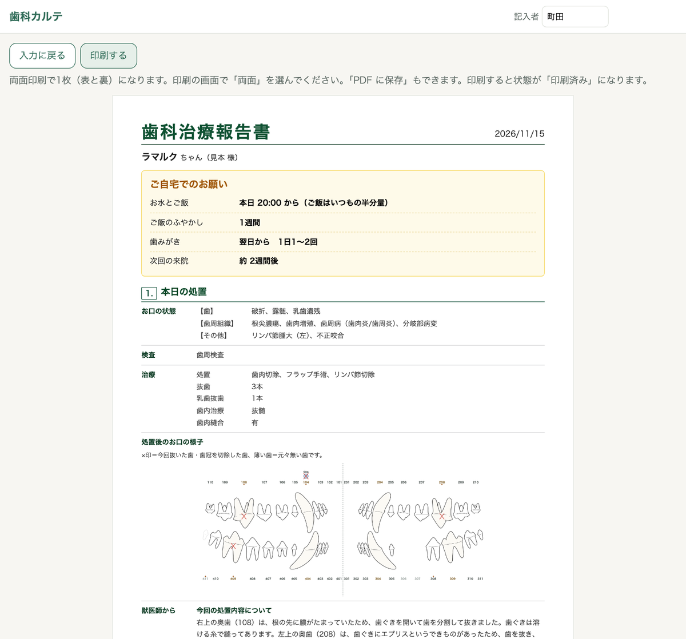
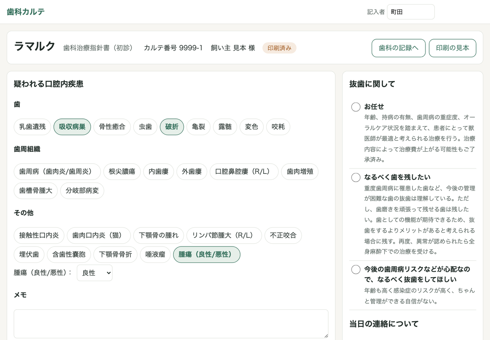

歯科カルテ 使い方ガイド
← ガイド一覧へ
獣医師・動物看護師向け ｜ 2026年11月15日版 ｜ 荻窪ツイン動物病院
30秒まとめ
歯科の記録だけを書くアプリです。
VetLink の中にあった歯科カルテを、独立したアプリにしました（2026-11-15〜）。予約から
今日の歯科が自動で並び、開くと
歯の図・歯周の表・口と顎・模式図に記録できます。飼い主様への
立ち会いの説明を録音すると、報告書の文の下書きができます。最後に
飼い主様の報告書（両面1枚）と
院内カルテを印刷します。
獣医師・動物看護師が使う画面です
緑 = 自動（予約・AI）
📦 11/15 までの VetLink の歯科の記録（約390件）は、このアプリへ移してあります。カルテ番号が空だったものなど数件だけ VetLink に残っています。
1. アプリを開く
1.1 合言葉
初めて開くと合言葉を聞かれます。入院カルテと同じ合言葉です。一度入れると、その端末は30日覚えています。

合言葉の画面
1.2 記入者
右上の「記入者」に自分の名前を入れてください。端末が覚えます。録音のまとめを確定したときなどに、この名前が残ります。
iPad で録音するときは、院内のアドレス（https）で開いてください。http のアドレスでは、ブラウザがマイクを使わせてくれません。ホーム画面に追加すると、アプリのように開けます。
2. 全体の流れ
2.1 1件の歯科の流れ
予約から「今日の歯科」に並ぶ歯科処置・歯科初診・歯科チェックの予約が自動で出ます。
↓
「開く」でカルテを始める歯ごと（図・表）→ 歯以外（口・顔・顎、模式図）を入れます。
↓
お迎えのときの説明を録音（任意）
↓
文字にして、まとめの下書きを作る話していないことは書きません。
↓
下書きを直して確定 →「確定する」
↓
飼い主様の報告書を印刷（両面）・院内カルテを印刷
2.2 カルテの画面のタブ
| まとまり | タブ | 入れるもの |
|---|
| 歯ごと | 図で入力 | 歯を押して、所見・処置（歯性不正咬合も） |
| 表で入力 | 歯周ポケット・出血・動揺度・根分岐部・歯肉炎指数・歯石指数・歯肉退縮・ステージ |
| 歯以外 | 口・顔・顎 | 口全体（かみ合わせ等）・顔（口の外）・リンパ節・舌・口蓋・頬の粘膜・咽頭・上顎・下顎 |
| 模式図 | 頭の骨などの図に、指やペンで書き込む（腫瘍の位置と大きさ等） |
| 説明・まとめ | 説明の録音 | 立ち会いの説明を録って、報告書の文の下書きを作る |
| まとめ | 全部を1枚で見る（見るだけ） |
| 追記 | あとから届いた病理検査の結果・確定診断名 |
3. 今日の歯科と患者さんの記録

今日の歯科（画面は見本の患者です）
- 予約から歯科処置・歯科初診・歯科チェックに分けて並びます。◀ 前の日／次の日 ▶で日を変えられます。
- 「開く」＝その日のカルテを開きます（まだなら始めます）。「記録」＝その子の歯科の記録の一覧へ。
- 予約に無い子は、右上の「カルテ番号で開く」から開けます。
- 「台帳に無い番号」と出たら、アーミックスにまだ無いカルテ番号です。番号を確かめてください。
- 患者さんの記録の画面には、今の歯の状態・歯科の来院の一覧・歯科治療指針書が出ます。「今日の来院を始める」「指針書を作る」もここからです。
4. 歯ごとに入れる（図で入力・表で入力）
4.1 図で入力

歯（または歯番）を押すと、右に所見・処置のボタンが出ます
- 歯か歯番を押して、右の欄で所見・処置を押していきます。◀ ▶ で隣の歯へ移れます。
- 「乳歯を表示」で乳歯の列が出ます。2本指で拡大・縮小できます。
- 下の「今回の記録（歯ごと）」に、入れた歯が並びます。前回の処置もその下に出ます。
- 歯性不正咬合（ベースナロー・交叉咬合・回転・叢生など）は、ここで歯ごとに入れます。
4.2 表で入力（歯周の検査）

- 上の右上 101〜／左上 201〜／左下 301〜／右下 401〜で区画を切り替えます。
- ポケットは読み上げの順に Enter で次へ進みます。
- 薄い数字＝前回の値。灰色の歯＝前回までに抜歯・歯冠切除（とばします）。
- 項目名の ⓘ を押すと、点数の付け方が出ます。
5. 歯以外（口・顔・顎／模式図）
5.1 口・顔・顎

- 上から口全体 → 顔（口の外）→ 口の中の各場所 → 顎の骨の順です。
- 場所ごとに「正常」か「異常」を押します。異常なら、同じ枠の中に位置（右頬・左鼻など）・所見・大きさ・疑い・検査・処置をまとめて入れます。
- 口全体＝1か所に決められないこと（骨格性の不正咬合のクラス0〜Ⅳ・よだれ・開口障害／閉口障害）と、口全体の処置（矯正など）。クラスの上にマウスを置くと説明が出ます。
- 病名は「〜の疑い」までです。確定診断は、病理検査の結果が届いてから「追記」で書きます（→ 7）。
5.2 模式図

- 「＋ 図を足す」から図を選び、指やペンで書き込みます（犬8枚・猫8枚）。
- 腫瘍は位置・大きさ・色・硬さなどを記録できます。書き込んだ図は緑の枠で上に並びます。
6. 立ち会いの説明の録音

録音すると、報告書へ入れる文の下書きができます（画面は見本です）
- お迎えで飼い主様に説明するときに、「● 録音を始める」を押します（iPad は院内の https のアドレスで）。
- 説明が終わったら「■ 止めて送る」。受け取りました → 文字にしています… → まとめを作っています… → 下書きができましたと進みます。
- 下書きは「今回の処置内容について（報告書へ）」「今後の方針（報告書へ）」と院内の記録に分かれています。読んで直します。
- 「確定して報告書へ入れる」を押すと、報告書と院内の記録に入ります。
下書きは、獣医師が確定するまでどこにも載りません。説明で話していないことは下書きに入りません。聞き取れなかった所・あいまいな所は、下書きに入れずに別の枠に出ます。
文字にするのは院内の機械で行い、音声は院外に出しません。まとめを作るときは、文字だけを AI（Claude）に送ります。
7. まとめ・確定・追記
- まとめ＝図・表・口と顎・模式図・説明を1枚で見られます（見るだけ。直すときは各タブへ）。「印刷の画面へ」で院内カルテの印刷へ進めます。
- 書き終わったら右上の「確定する」。確定した来院は「編集を開く」を押すまで変わりません。
- 追記＝あとから届いた病理検査の結果を添付して、確定診断名を書き足します。確定した来院にも書けます（元の記録は変わりません）。
8. 飼い主様の報告書
8.1 入力

- カルテの「飼い主様の報告書」から開きます。口腔内の状況・検査・治療内容は歯科カルテから自動で入ります。カルテを直したら「歯科カルテから読み直す」。
- 過ごし方は押すだけ：お水とご飯の時刻（18:00〜22:00）・ご飯の量・ふやかし・エリザベスカラー・歯みがきを始める目安。
- 次回の来院は目安（1週間後〜半年後）を押すと、処置日から日にちが自動で入ります。休診日などは直してください。
- 「明日以降」の説明と緊急受診の目安は、犬・猫や処置の内容に合わせて自動で出ます。
8.2 印刷（両面で1枚）

- 「印刷の見本」→「印刷する」。印刷の画面で「両面」を選ぶと、表と裏で1枚になります。「PDF に保存」もできます。
- 印刷すると、状態が「印刷済み」になります。
9. 院内カルテの印刷・歯科治療指針書
- 院内カルテの印刷＝カルテの上の「院内カルテの印刷」から。歯の図・歯周・口と顎・模式図・説明まで、A4縦で何枚でも出ます。確定前の来院は、その旨が出ます。
- 歯科治療指針書（初診）＝患者さんの記録の画面の「指針書を作る」から。疑われる口腔内疾患・抜歯の方針・当日の連絡の希望を入れ、「印刷の見本」から印刷します。状態（下書き／お渡し待ち／印刷済み／お渡し済み／要確認）を付けられます。

10. よくある質問・困ったとき
| こんなとき | こうしてください |
|---|
| 合言葉を聞かれた | 入院カルテと同じ合言葉です。30日たつと、もう一度聞かれます。 |
| 今日の歯科に出てこない | 予約システムで歯科の予約になっているかを確かめてください。予約が無い子は「カルテ番号で開く」から開けます。 |
| 録音のボタンを押しても始まらない | 院内の https のアドレス（:14700）で開いているかを確かめてください。最初の1回は、マイクを使ってよいかを聞かれるので「許可」を押します。 |
| 「うまくいきませんでした」と出た | 録音は残っています。カードのボタンからやり直せます。続くときは院長へ。 |
| 確定した来院を直したい | カルテの上の「編集を開く」を押してから直し、もう一度「確定する」を押します。病理の結果だけなら「追記」で足せます。 |
| 前の歯科の記録（VetLink の頃）を見たい | 11/15 までの分はこのアプリに移してあります。患者さんの「記録」から見られます。 |
| 使いにくい・こうしてほしい | 院長に伝えてください。 |
⚠ 患者情報の取り扱い：記録と録音は院内のサーバーに保管されます。院外で画面を開いたまま席を離れない・画面の写真をSNS等に載せないでください。（このガイドの画像はすべて見本の患者で、実在の患者情報は含みません）